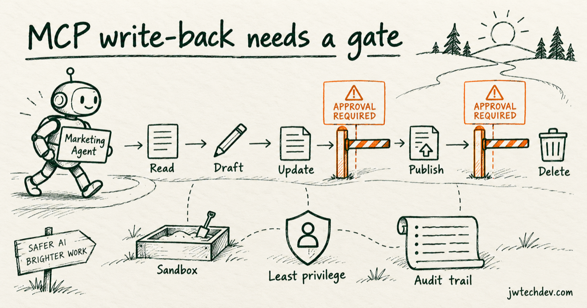

Adobe Marketo MCP turns marketing automation into a permission problem
More than 100 callable operations can make agents useful fast. They also make permission design, sandbox testing, approvals, and audit evidence unavoidable.

Quick answer
Do not give a marketing agent one broad permission called “Marketo access.” Separate read, draft, update, publish, and destructive operations. Put stronger identity, approval, evidence, and rollback requirements around each step up the ladder.
The new action surface
Adobe documents more than 100 Marketo MCP operations across forms, programs, smart campaigns, leads, emails, snippets, lists, and folders. Some operations read data. Others create or update content. Some can approve assets or activate and deactivate campaigns.
That is the practical shift: an agent is no longer only writing copy. It can cross into systems of record and systems of action.
A five-class risk model
Read retrieves records without changing them. Draft creates a proposed artifact in a non-public state. Update modifies an existing record. Publish approves, activates, or exposes work to customers. Destructive deletes, removes membership, disables, or performs a change that is difficult to reverse.
Each class should map to allowed identities, environments, data classes, approval requirements, test evidence, idempotency behavior, and rollback options.
Controls that matter
Use a sandbox first. Issue scoped credentials to the calling identity. Allowlist tools rather than granting the full server surface. Validate arguments before execution. Require human approval at publish and destructive boundaries. Log the actor, workflow, tool, target, input, result, and approval decision.
Adobe itself advises customers to test in sandboxes and validate MCP-initiated actions. That warning should be treated as an architecture requirement, not a legal footnote.
A safer rollout
Start read-only. Add draft actions after the team can reliably trace them. Add updates only for narrow, reversible use cases. Delay publish and destructive actions until approval, rollback, and evidence paths are tested under failure.
Autonomy should be earned by a workflow, not granted because the demo looked smooth.
Sources checked
Want the starter kit?
Get a plain-English foundation for cloud, permissions, and AI workflows.
Get resources